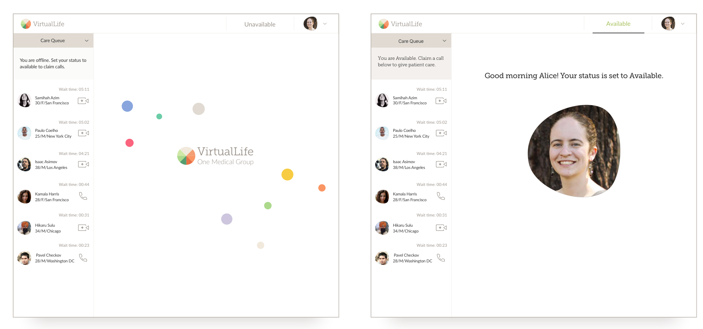
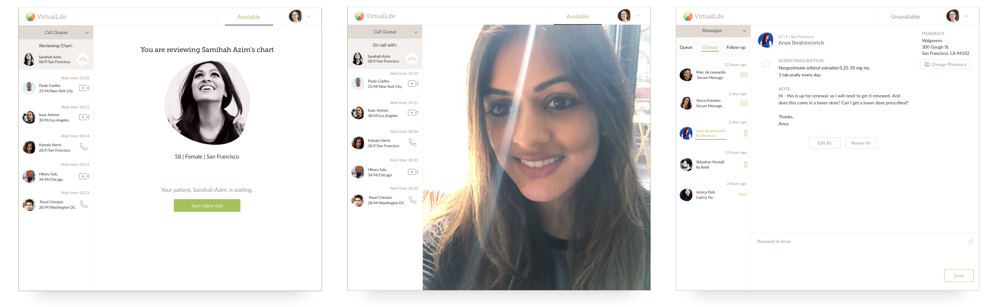

One Medical | VirtualLife
Every quarter, the Product Dev team hits pause on our core projects and participates in a hackathon. One of the web engineers I worked closely with wanted to use Electron and had the idea of a dedicated desktop app for the Virtual Med Team. He pitched the idea to me, which I then designed as he built it. This hackathon project is a concept of what an internal desktop tool could be if the Virtual Medical Team had their own tool connected to an EMR.

Here are a few more screens from the hackathon:

